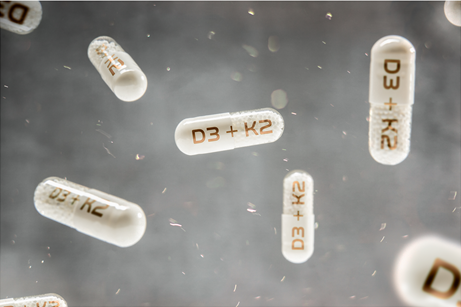

Одна микрогранула вместо двух ингредиентов: витамин D3 и витамин K2 объединены в микроинкапсулированной форме для точного дозирования, стабильности и более простого производства.

Совмещение двух активов в одной рецептуре добавляет технологических сложностей: ингредиенты могут взаимодействовать до употребления, терять активность под действием влаги и тепла, а также требовать раздельного дозирования и дополнительных этапов производства.
VitaQ Duo® объединяет витамин D3 и витамин K2 в одной микроинкапсулированной микрогрануле. Это упрощает рецептуру, повышает стабильность и снижает сложность производства современных нутрицевтических продуктов.
Четыре типовые сложности, которые создают два отдельных актива в одной рецептуре.
Активные ингредиенты взаимодействуют друг с другом ещё до употребления.
Влага, тепло и условия переработки снижают активность витаминов.
Обработка нескольких активов увеличивает сложность рецептуры.
Раздельные ингредиенты усложняют закупки и производство.
Пять причин объединить D3 и K2 в одной микрогрануле.
Два незаменимых витамина в одном ингредиенте — удобнее дозировать и проще рецептура.
Микроинкапсуляция защищает чувствительные активы и поддерживает биодоступность.
Меньше компонентов — проще закупки и управление цепочкой поставок.
Оптимизировано для эффективного крупносерийного производства.
Равномерное распределение микрогранул обеспечивает стабильную доставку нутриентов.
Комбинированная микрогранула D3 + K2 по материалам брошюры PHS 2026 года.
Витамин D3 — 600 МЕ, витамин K2 — 55 мкг в одной микрогрануле.
Микрогранулы 10 мг и 20 мг. Актуальные спецификации и наличие подтверждаются у PHS.
Таблетки, капсулы, порошки и саше.
Информация приведена по брошюре PHS 2026 г. Перед публикацией и заказом необходимо подтвердить актуальные спецификации и наличие.
Формулы для здоровья костей, сердечно-сосудистой системы и общего самочувствия.
Микроинкапсулированная микрогранула, объединяющая витамин D3 и витамин K2 в одном ингредиенте.
По материалам брошюры 2026 года — 600 МЕ витамина D3 и 55 мкг витамина K2 в одной микрогрануле.
Микрогранулы 10 мг и 20 мг. Актуальное наличие и спецификации подтверждаются у PHS.
Таблетки, капсулы, порошки и саше.
Один ингредиент вместо двух упрощает дозирование, снижает число этапов и уменьшает риск ошибки при составлении рецептуры.
Пришлите состав продукта и требования к рецептуре — подберём технологию, пришлём образцы, спецификации и данные по применению.